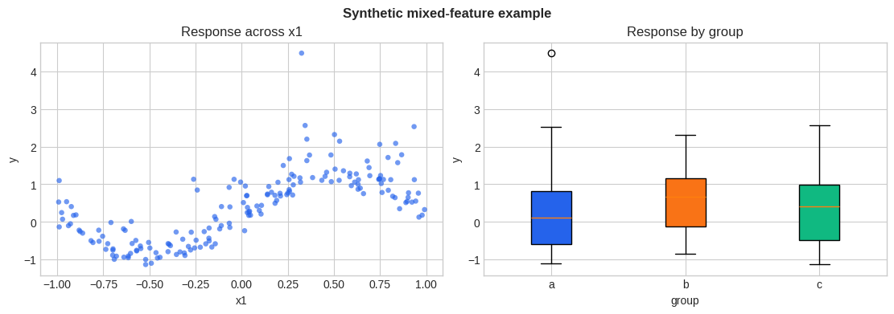
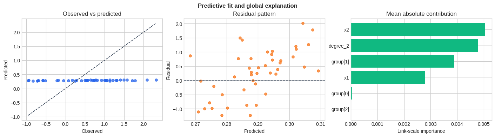
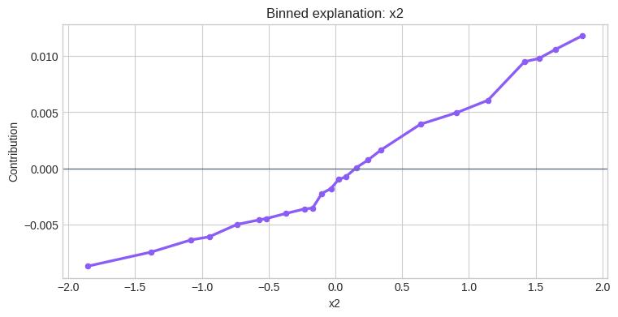
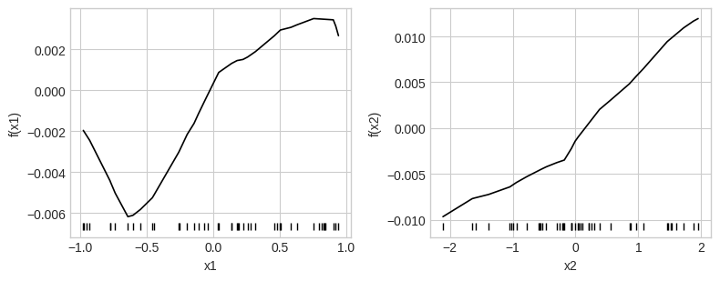

NBM-SPAM: Learned unary bases with low-rank polynomial heads
NBM-SPAM learns unary NBM score channels, uses one segment linearly, and sends the remaining segments through degree-specific SPAM heads.
Model in one view
Let \(z_j^{(q)}(x_j)\) be unary NBM scores reserved for degree \(q\). Then
Higher-order structure is created by SPAM; the NBM stage remains unary.
NBM-SPAM first learns nonlinear unary coordinates and then applies SPAM’s low-rank polynomial machinery to those coordinates. It can therefore express interactions between learned feature shapes rather than only between raw inputs. Separate subnet segments reserve channels for the linear and higher-degree heads.
The decomposition is hierarchical: the NBM stage defines the coordinate system and the SPAM stage defines polynomial interaction structure. Increasing the number of bases, subnet replicas, degree, or rank expands different parts of the model and should be tuned separately.
[1]:
import matplotlib.pyplot as plt
import numpy as np
import pandas as pd
from sklearn.model_selection import train_test_split
plt.style.use("seaborn-v0_8-whitegrid")
COLORS = ["#2563EB", "#F97316", "#10B981", "#8B5CF6", "#EF4444"]
rng = np.random.default_rng(7)
n = 180
X = pd.DataFrame({
"x1": rng.uniform(-1.0, 1.0, n),
"x2": rng.normal(size=n),
"group": rng.choice(["a", "b", "c"], size=n),
})
y = (
np.sin(np.pi * X["x1"])
+ 0.35 * X["x2"] ** 2
+ 0.30 * (X["group"] == "b")
+ rng.normal(0.0, 0.12, n)
)
X_train, X_test, y_train, y_test = train_test_split(
X, y, test_size=0.25, random_state=7
)
[2]:
fig, axes = plt.subplots(1, 2, figsize=(11, 3.8), constrained_layout=True)
axes[0].scatter(X["x1"], y, s=22, alpha=0.65, color=COLORS[0], edgecolor="none")
axes[0].set(title="Response across x1", xlabel="x1", ylabel="y")
group_order = ["a", "b", "c"]
group_values = [y[X["group"].to_numpy() == level] for level in group_order]
boxes = axes[1].boxplot(group_values, tick_labels=group_order, patch_artist=True)
for patch, color in zip(boxes["boxes"], COLORS, strict=False):
patch.set_facecolor(color)
axes[1].set(title="Response by group", xlabel="group", ylabel="y")
fig.suptitle("Synthetic mixed-feature example", fontweight="bold")
plt.show()
plt.close(fig)

Fit the model
[3]:
from nampy.models import NBMSPAMClassifier, NBMSPAMLSS, NBMSPAMRegressor
model = NBMSPAMRegressor(
num_bases=16,
layer_sizes=[32, 16],
ranks=[12],
num_subnets=1,
featurizer="conv1d",
output_penalty=1e-4,
)
model.get_params(deep=False)
[3]:
{'activation': torch.nn.modules.activation.ReLU,
'bases_dropout': 0.0,
'basis_l1_regularization': 0.0,
'batch_norm': True,
'dropout': 0.0,
'featurizer': 'conv1d',
'layer_norm': False,
'layer_sizes': [32, 16],
'lower_order_correction': False,
'lr': 0.001,
'lr_factor': 0.1,
'lr_patience': 10,
'norm': None,
'num_bases': 16,
'num_subnets': 1,
'orthogonal': False,
'output_penalty': 0.0001,
'proximal': False,
'ranks': [12],
'reg_order': 2,
'regularization_scale': 0.0,
'skip_connections': False,
'spam_dropout': 0.0,
'use_glu': False,
'weight_decay': 0.0,
'feature_preprocessing': None,
'n_bins': 64,
'numerical_preprocessing': 'none',
'categorical_preprocessing': 'one-hot',
'use_decision_tree_bins': False,
'binning_strategy': 'uniform',
'task': 'regression',
'cat_cutoff': 0.03,
'treat_all_integers_as_numerical': False,
'degree': 3,
'scaling_strategy': 'minmax',
'n_knots': 64,
'use_decision_tree_knots': True,
'knots_strategy': 'uniform',
'spline_implementation': 'sklearn',
'min_unique_vals': 5}
[4]:
model.fit(
X_train,
y_train,
max_epochs=3,
batch_size=64,
random_state=7,
logger=False,
enable_progress_bar=False,
enable_model_summary=False,
)
predictions = model.predict(X_test)
r2 = model.score(X_test, y_test)
metrics = model.evaluate(X_test, y_test)
components = model.predict_components(X_test)
explanation = model.explain_terms(X_test, max_bins=24, center=True)
importance = model.term_importance(X_test, center=True)
interaction_importance = model.interaction_importance(X_test, center=True)
display({"R2": r2, **metrics})
display(importance)
display(explanation.head(12))
GPU available: False, used: False
TPU available: False, using: 0 TPU cores
/opt/hostedtoolcache/Python/3.11.16/x64/lib/python3.11/site-packages/lightning/pytorch/core/module.py:522: You called `self.log('val_loss', ..., logger=True)` but have no logger configured. You can enable one by doing `Trainer(logger=ALogger(...))`
/opt/hostedtoolcache/Python/3.11.16/x64/lib/python3.11/site-packages/lightning/pytorch/core/module.py:522: You called `self.log('train_loss', ..., logger=True)` but have no logger configured. You can enable one by doing `Trainer(logger=ALogger(...))`
`Trainer.fit` stopped: `max_epochs=3` reached.
{'R2': -0.08295069164746849, 'Mean Squared Error': 0.7558001288392823}
| term | term_type | output | importance | |
|---|---|---|---|---|
| 0 | x2 | main | 0 | 0.005049 |
| 1 | degree_2 | main | 0 | 0.004784 |
| 2 | group[1] | main | 0 | 0.003875 |
| 3 | x1 | main | 0 | 0.002795 |
| 4 | group[0] | main | 0 | 0.000029 |
| 5 | group[2] | main | 0 | 0.000010 |
| term | term_type | output | value | contribution | count | importance | |
|---|---|---|---|---|---|---|---|
| 0 | x1 | main | 0 | -0.965 | -0.001993 | 2 | 0.002795 |
| 1 | x1 | main | 0 | -0.8895 | -0.002346 | 2 | 0.002795 |
| 2 | x1 | main | 0 | -0.7905 | -0.004445 | 2 | 0.002795 |
| 3 | x1 | main | 0 | -0.6915 | -0.005601 | 2 | 0.002795 |
| 4 | x1 | main | 0 | -0.58 | -0.005969 | 2 | 0.002795 |
| 5 | x1 | main | 0 | -0.4875 | -0.005178 | 2 | 0.002795 |
| 6 | x1 | main | 0 | -0.35 | -0.003059 | 1 | 0.002795 |
| 7 | x1 | main | 0 | -0.209 | -0.002578 | 2 | 0.002795 |
| 8 | x1 | main | 0 | -0.12505 | -0.001388 | 2 | 0.002795 |
| 9 | x1 | main | 0 | -0.05205 | -0.000416 | 2 | 0.002795 |
| 10 | x1 | main | 0 | 0.02175 | 0.000836 | 2 | 0.002795 |
| 11 | x1 | main | 0 | 0.09875 | 0.001303 | 2 | 0.002795 |
Evaluate and explain
[5]:
observed = np.asarray(y_test).reshape(-1)
fitted = np.asarray(predictions).reshape(-1)
residual = observed - fitted
fig, axes = plt.subplots(1, 3, figsize=(14, 3.8), constrained_layout=True)
axes[0].scatter(observed, fitted, s=28, alpha=0.75, color=COLORS[0])
lo = min(observed.min(), fitted.min())
hi = max(observed.max(), fitted.max())
axes[0].plot([lo, hi], [lo, hi], "--", color="#334155", linewidth=1.2)
axes[0].set(title="Observed vs predicted", xlabel="Observed", ylabel="Predicted")
axes[1].scatter(fitted, residual, s=28, alpha=0.75, color=COLORS[1])
axes[1].axhline(0.0, color="#334155", linestyle="--", linewidth=1.2)
axes[1].set(title="Residual pattern", xlabel="Predicted", ylabel="Residual")
importance_plot = (
importance.groupby("term", as_index=False)["importance"]
.mean()
.sort_values("importance")
)
axes[2].barh(importance_plot["term"], importance_plot["importance"], color=COLORS[2])
axes[2].set(title="Mean absolute contribution", xlabel="Link-scale importance")
fig.suptitle("Predictive fit and global explanation", fontweight="bold")
plt.show()
plt.close(fig)
main_effects = explanation.loc[
(explanation["term_type"] == "main") & (explanation["output"] == 0)
].copy()
main_effects["numeric_value"] = pd.to_numeric(main_effects["value"], errors="coerce")
main_effects = main_effects.dropna(subset=["numeric_value"])
if not main_effects.empty:
numeric_terms = set(main_effects["term"])
top_term = next(
term
for term in importance_plot.sort_values("importance", ascending=False)["term"]
if term in numeric_terms
)
curve = main_effects.loc[main_effects["term"] == top_term].sort_values("numeric_value")
if not curve.empty:
fig, ax = plt.subplots(figsize=(7.5, 3.8), constrained_layout=True)
ax.plot(curve["numeric_value"], curve["contribution"], color=COLORS[3], linewidth=2.4)
ax.scatter(curve["numeric_value"], curve["contribution"], s=20, color=COLORS[3])
ax.axhline(0.0, color="#64748B", linewidth=1)
ax.set(title=f"Binned explanation: {top_term}", xlabel=top_term, ylabel="Contribution")
plt.show()
plt.close(fig)
term_figures = model.plot_terms(X_test, center=True, rug=True, pages=1)
interaction_terms = interaction_importance["term"].astype(str).tolist()
interactions_are_raw_columns = all(
all(
part in X_test.columns
and pd.api.types.is_numeric_dtype(X_test[part])
for part in term.split(":")
)
for term in interaction_terms
)
if interaction_terms and interactions_are_raw_columns:
model.plot_interactions(X_test)



Model-specific controls
ranks sets the SPAM head rank for each polynomial degree. num_subnets controls replicated unary basis score channels per polynomial.
[6]:
display({key: model.get_params(deep=False)[key] for key in ("ranks", "num_subnets", "featurizer")})
display(model.predict_components(X_test).terms.keys())
{'ranks': [12], 'num_subnets': 1, 'featurizer': 'conv1d'}
dict_keys(['x1', 'x2', 'group[0]', 'group[1]', 'group[2]', 'degree_2'])
Supported task variants
NBM-SPAM provides regressor, classifier, and LSS estimators with the same hybrid decomposition.
[7]:
task_variants = {"regression": NBMSPAMRegressor(), "classification": NBMSPAMClassifier(), "distributional": NBMSPAMLSS()}